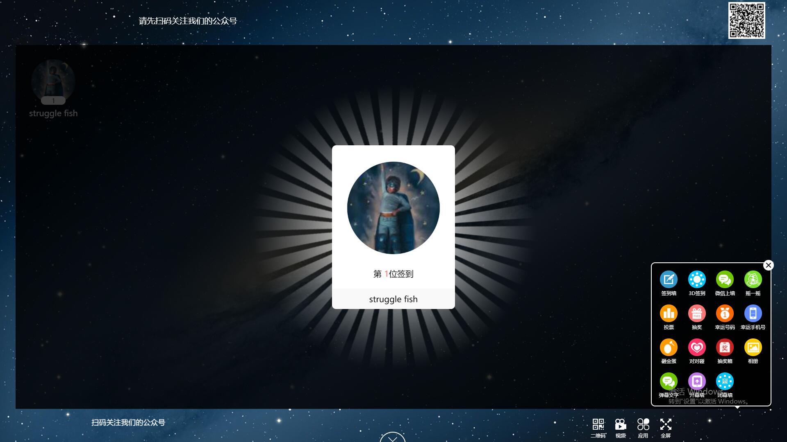
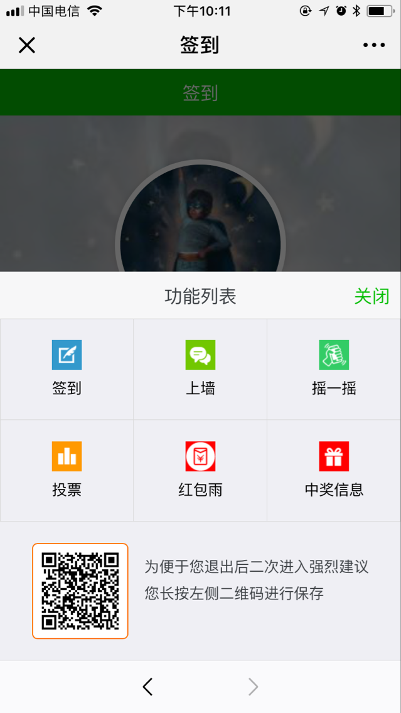
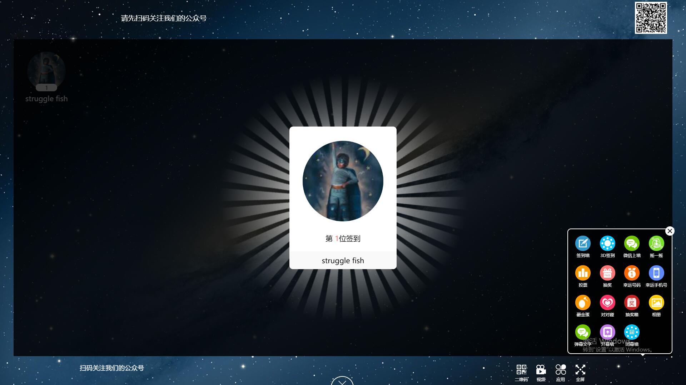
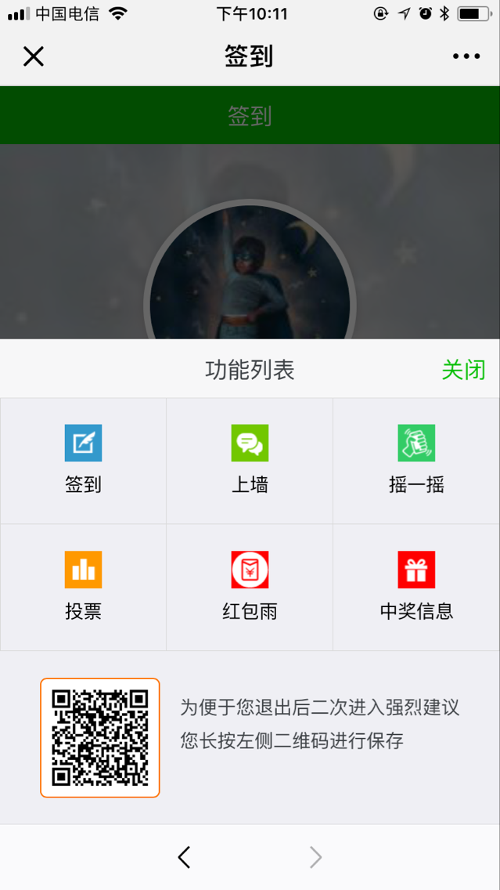

1.电脑端

电脑端的主要功能分为视频和应用两个大模块，视频的主要功能是播放后台上传的视频，应用主要由 签到墙，3D签到，微信上墙，摇一摇，投票，抽奖，幸运号码，幸运手机号，砸金蛋，对对碰，抽奖箱， 相册，弹幕文字，开幕墙，闭幕墙这15个功能组成。
2.手机端

手机端的功能分为签到，上墙，摇一摇，投票，红包雨，中奖信息等功能组成。

电脑端的主要功能分为视频和应用两个大模块，视频的主要功能是播放后台上传的视频，应用主要由 签到墙，3D签到，微信上墙，摇一摇，投票，抽奖，幸运号码，幸运手机号，砸金蛋，对对碰，抽奖箱， 相册，弹幕文字，开幕墙，闭幕墙这15个功能组成。

手机端的功能分为签到，上墙，摇一摇，投票，红包雨，中奖信息等功能组成。